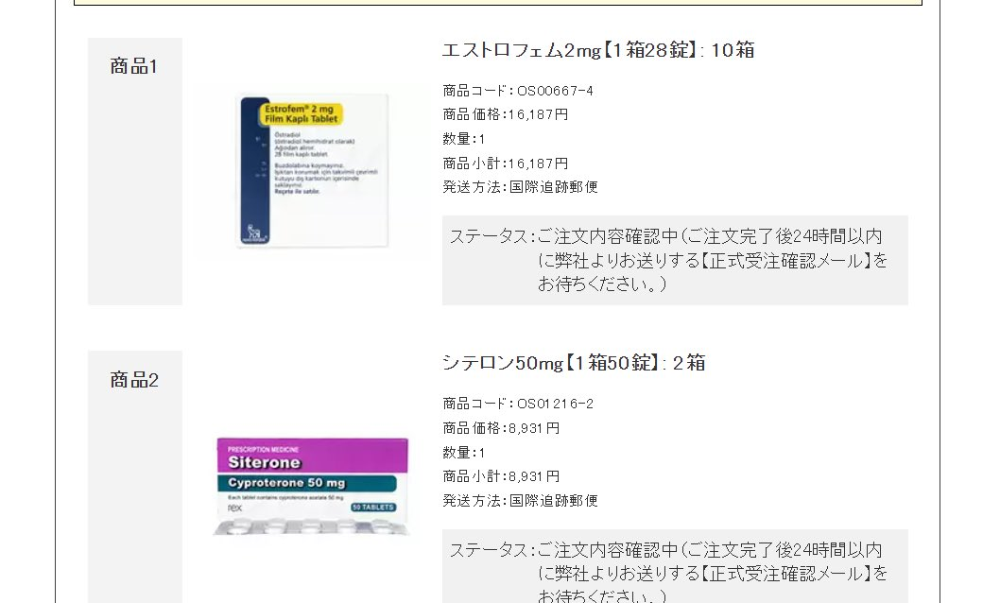

Minokakay（泰补色诺
@Minokakay
@xiaobudianmomo 日本客户就那几个，我不缺几个客户，但我就是看不惯你这种颠倒黑白的样子，日本色普龙和补佳乐价格高是事实，网上能买便宜的诺坤复和不知道什么厂生产的色普龙也是事实，事实就是日本人买拜耳Androcur和progynova成本高于中国，很难理解吗

你的筱筱(❁´◡`❁)*✲ﾟ*
@xiaobudianmomo
@Minokakay 色我买的8900日元两盒😅，诺折合人民币八十多。全都是包邮。爱信不信。搞不懂你想说什么。还是说怕别人自己买你没钱赚么，那大可不必。我在日本认识的人家自己从泰国买了能吃到过期的诺。 https://t.co/FNT6VFjWWO